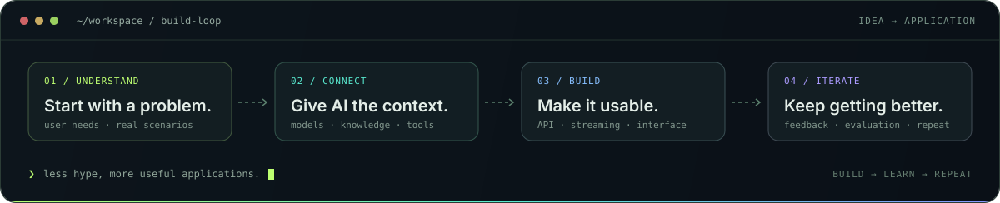

你好，我是 zhe-w12，一名 AI 应用开发者。
让模型走出对话框，进入真实的工作流。
RoomAI / Multimodal Knowledge Base / All repositories ↗
01 / About me
我专注于 AI 应用开发。比起“模型能回答什么”，我更关心“怎样让模型真正帮人把事做完”——从一个具体问题出发，接入模型与数据、编排 Agent、打磨交互，最后交付一个能日常使用的应用。
目前我主要深耕两个方向：
- Agent 工作流：用 LangGraph 编排工具调用与多步任务，让 AI 参与团队讨论，把想法沉淀为决策和待办。代表项目 RoomAI。
- 多模态 RAG：结合文档解析、OCR、视觉理解与混合检索，让回答有来源、可追溯。代表项目 Multimodal Knowledge Base。
我能独立完成从后端到前端的完整链路：Python / FastAPI 负责服务、实时通信与流式输出，React / TypeScript 负责对话界面与产品体验。在我看来，好的 AI 应用不该停在 Demo，而应该是人们愿意每天打开的工具。
02 / Selected work
|
RoomAI ↗不止聊天，让团队讨论走向行动。 面向小团队的 AI 立项讨论聊天室。实时交流、AI 总结、想法评估与投票，让讨论逐步沉淀为决策、待办和立项纪要。
|
Multimodal Knowledge Base ↗连接文档与图片，让回答有据可循。 面向教育资料的多模态知识库。结合文档解析、OCR、视觉理解与混合检索，由可调用工具的 RAG Agent 流式回答并展示来源。
|
More code · DocuCraft ↗ · 查看全部仓库
03 / Tech stack
以 AI 应用为核心，Python 与 Java 双栈，从模型、后端到前端都能独立交付。
| Layer | Technologies | What I build with them |
|---|---|---|
| AI / Agents | LangGraph LLM APIs Tool Calling Prompt Engineering |
模型接入、上下文管理与 Agent 编排 |
| RAG / Retrieval | Milvus Embedding BM25 Rerank PaddleOCR |
文档与图片解析、混合检索、重排 |
| Python Backend | Python FastAPI WebSocket SSE |
AI 服务、实时协作与流式输出 |
| Java Backend | Java Spring Boot Spring MVC MyBatis-Plus |
业务系统、RESTful API 与权限管理 |
| Frontend | React Vue TypeScript Vite Tailwind CSS |
对话界面、管理后台与产品交互 |
| Data / DevOps | MySQL Redis Docker Git Linux |
数据存储、缓存与部署运维 |
04 / From idea to application

少一点空想，多一个能用的应用。
Make it work. Make it useful. Keep improving.
欢迎交流 AI 应用、Agent 与 RAG，也欢迎在项目中提出 Issue 或 PR。
See what I'm building ↗